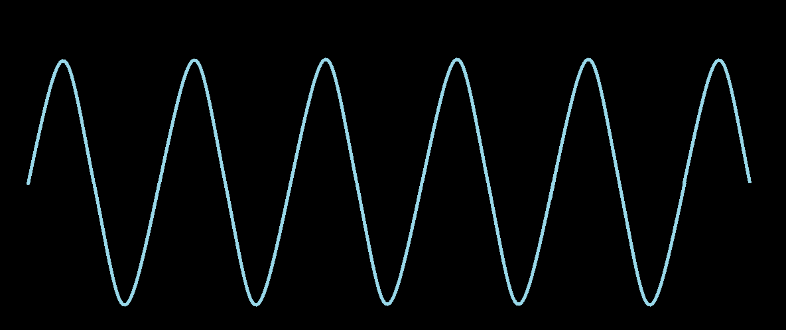
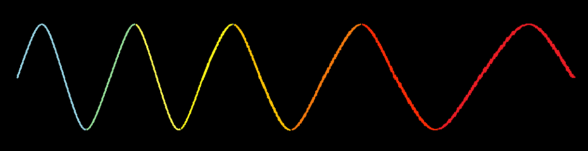
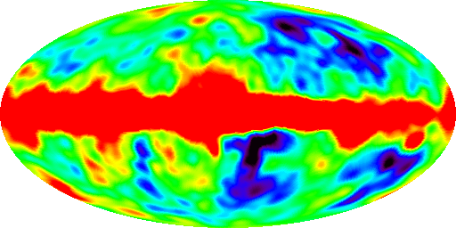

The beginning of the universe
14 billion years ago the universe emerged from nothing and for an unknown purpose. At first it was much smaller than the atom, infinitely smaller. It then expanded to a trillion miles in one second. This event is called the Big Bang.
Time began when the universe was created, so the question of "what was happening before" does not make sense. The big bang was not even an explosion in the space of matter, but rather an expansion of space itself.
From the beginning the universe consisted of pure energy;
But in one millionth of a minute, part of the energy is converted from matter to form a huge collection of subatromic particles (particles that are smaller than an atom).
1
the biginning of the universe
2
Energy is converted into particles
3
Protons and neutrons appear
4
Stars are formed in space
5
The first galaxies are formed
6
The solar system is formed
An expanding world
The picture below does not show the shape of the universe, it is unknown. Instead there is a circle of time that shows how it has been expanding and changing since the day of the explosion. We know it is expanding as the most distant galaxies move away at fantastic speeds. Astronomers have concluded that the beginning of the expansion 13.8 billion years ago was at one point: the Big Bang.
Discover the Big Bang
The first scientific evidence for the Big Bang was made by astronomers in 1992 when they discovered that light coming from distant galaxies was reddening.
As objects move in our opposite direction, light waves stretch and change color. The farther away the galaxy is, the faster it is running away from us. This is an indicator that the world is expanding.
Static universe

There is no change in starlight
Static universe
There is no change in starlight

Expanding universe
The rays of light stretch
The residual light of the Big Bang
In the 1960s, astronomers discovered that faint microwave radiation came from any part of the sky. This latent energy is a faded residue of intense emissions released during a big bang.

Microwave map of the sky arch